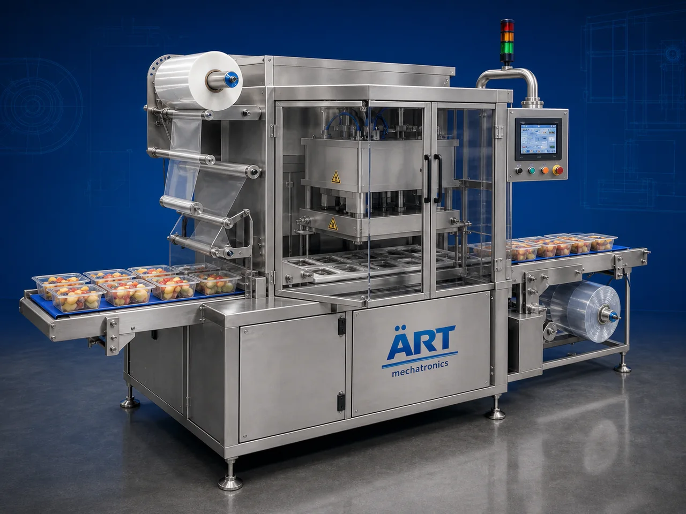

Cup & Tray Sealing Machine (Automatic Food Container Sealing System)
A Cup & Tray Sealing Machine, also known as a Cup Sealing Machine, Tray Sealing Machine, Food Container Sealer, or Automatic Cup & Tray Packaging System, is an advanced industrial packaging solution designed for automatic cup and tray feeding, heat sealing, foil sealing, vacuum sealing, MAP gas flushing, lid placement, coding, and high-speed food packaging operations for yogurt, beverages, ready meals, sauces, desserts, dairy products, frozen foods, snacks, and FMCG products.

About the Cup & Tray Sealing Machine
Cup and tray sealing systems are widely used for:
- Yogurt cup sealing
- Ready meal tray sealing
- Beverage cup packaging
- Dairy product sealing
- Dessert cup packaging
- Frozen food tray packaging
- Sauce and condiment tray sealing
- Hygienic retail food packaging
The machine improves:
- Product freshness
- Leak-proof sealing quality
- Shelf life protection
- Packaging consistency
- Production efficiency
- Product hygiene
- Retail packaging appearance
Industrial cup & tray sealing machines use:
- Automatic cup and tray feeding systems
- Servo synchronized sealing systems
- PLC and HMI automation controls
- Precision heat and foil sealing mechanisms
- Vacuum and MAP gas flushing systems
to automatically seal cups and trays with superior packaging quality and high production efficiency.
Cup & tray sealing machines are widely used in industries such as:
Dairy industries Food processing industries Beverage industries Ready meal industries Dessert industries Frozen food industries Sauce industries FMCG industries
where hygienic packaging, leak-proof sealing, and premium retail presentation are essential.
The machine is highly suitable for:
- Yogurt cup sealing
- Ready meal tray packaging
- Beverage cup sealing
- Sauce tray packaging
- Frozen food sealing
- Retail food packaging
ART Mechatronics offers high-performance cup & tray sealing machines, engineered for continuous industrial operation, hygienic food packaging performance, accurate sealing quality, and reliable long-term packaging automation.
Working Principle of Cup & Tray Sealing Machine
- 1. Filled Cup / Tray Feeding Filled cups or trays are automatically fed into sealing section through synchronized indexing systems.
- 2. Lid / Film Positioning Process Machine automatically positions sealing film or lids onto containers before sealing operation.
Servo synchronization ensures accurate alignment and smooth container handling.
- 3. Cup & Tray Sealing Operation Machine handles: ✔ Yogurt cups ✔ Beverage cups ✔ Ready meal trays ✔ Sauce containers ✔ Dessert cups ✔ Frozen food trays ✔ Dairy product containers
accurately and continuously.
- 4. Heat Sealing & MAP Packaging Process Machine performs: Heat sealing Foil sealing Vacuum sealing MAP gas flushing Leak-proof sealing
for hygienic and freshness-protected packaging quality.
- 5. Coding & Inspection Integration Optional systems include: Batch coding Date printing QR code printing Vision inspection Leak testing systems
- 6. Finished Container Discharge Finished sealed containers discharged automatically for: Cartoning Case packing Retail distribution Cold chain logistics
Types of Cup & Tray Sealing Machines
- 1. Yogurt Cup Sealing Machine Designed for: ✔ Dairy and fermented product packaging applications
- 2. MAP Tray Sealing Machine Suitable for: ✔ Modified atmosphere food packaging systems
- 3. Vacuum Tray Sealing Machine Uses: ✔ Vacuum-sealed food packaging systems
- 4. Foil Cup Sealing Machine Designed for: ✔ Beverage and dessert cup packaging systems
- 5. Servo Driven Sealing Machine Suitable for: ✔ Precision high-speed sealing operations
- 6. Fully Automatic Cup & Tray Sealing System Designed for: ✔ Complete industrial food packaging automation lines
Industries Using Cup & Tray Sealing Machines
🥛 Dairy Industry Yogurt, flavored milk, cream, and dairy cup sealing systems. 🍱 Ready Meal Industry Ready-to-eat meals, frozen foods, and convenience food tray sealing systems. 🥤 Beverage Industry Cold beverages, juices, flavored drinks, and liquid cup sealing systems. 🍮 Dessert Industry Pudding, jelly, mousse, custard, and dessert cup packaging systems. 🍅 Sauce & Condiment Industry Sauces, dips, mayonnaise, and condiment tray packaging systems. 🛒 FMCG Industry Consumer food products and premium retail packaging systems.
Features & Advantages
- High-speed automatic cup and tray sealing operation
- Hygienic and leak-proof packaging quality
- Vacuum and MAP freshness preservation systems
- PLC and servo automation control systems
- Improves product freshness and shelf life
- Reduces product wastage and labor dependency
- Supports multiple cup and tray sizes and formats
- Reliable long-term industrial performance
- Smooth and continuous packaging operation
Technical Highlights
Machine Type: Automatic cup and tray sealing machine Industrial food sealing system Container packaging sealing machine Packaging Material: Plastic cups PET trays PP trays Food-grade containers Sealing Integration: Heat sealing systems Foil sealing systems Vacuum sealing systems MAP gas flushing systems Features: PLC control system Servo synchronization Touchscreen HMI Batch coding integration Automatic container feeding systems Applications: Yogurt Beverages Desserts Sauces Ready meals Frozen foods Automation: Semi-automatic Fully automatic industrial systems
Turnkey Cup & Tray Sealing Solutions
ART Mechatronics offers: Complete sealing and packaging systems Automatic cup and tray sealing solutions Packaging automation integration systems Conveyor synchronization systems Installation & commissioning After-sales service & AMC
Why Choose Art Mechatronics
Expertise in industrial packaging and automation systems Customized food sealing solutions for multiple industries High-performance and hygienic sealing technology Advanced PLC and servo automation systems Proven industrial packaging performance across sectors
Applications
Dairy Processing Industries Ready Meal Manufacturing Plants Beverage Packaging Facilities Dessert Manufacturing Units Frozen Food Industries FMCG Packaging Plants
Get pricing & specs for the Cup & Tray Sealing Machine
Share the product, target capacity, current process and plant location. These details help our engineers discuss the right machine or line configuration.
One partner, from design to start-up
ART Mechatronics designs, manufactures, installs and commissions your Cup & Tray Sealing Machine solution with regional presence in India, UAE and Thailand.